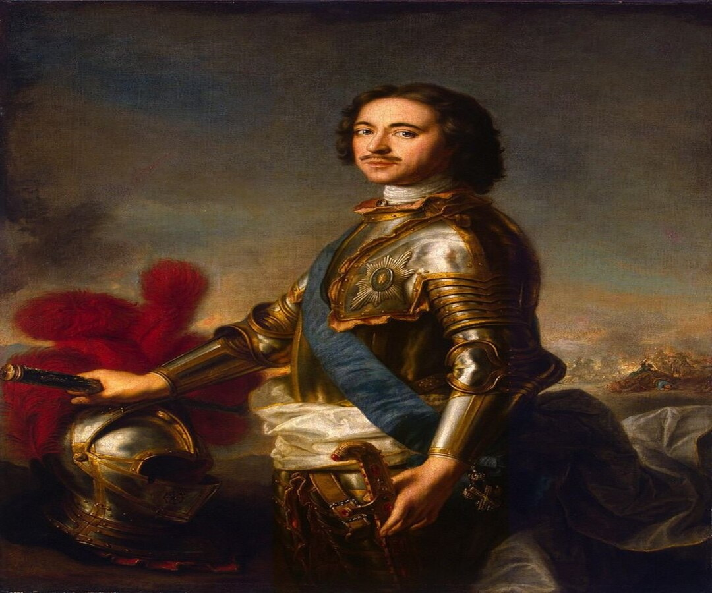
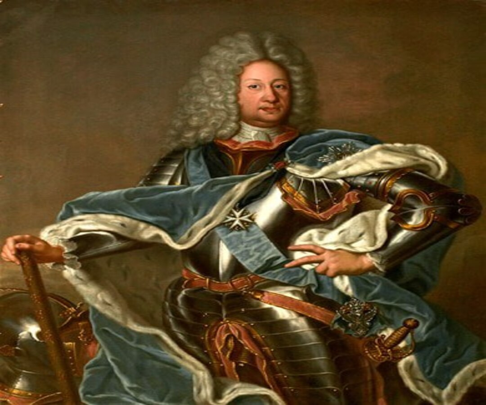
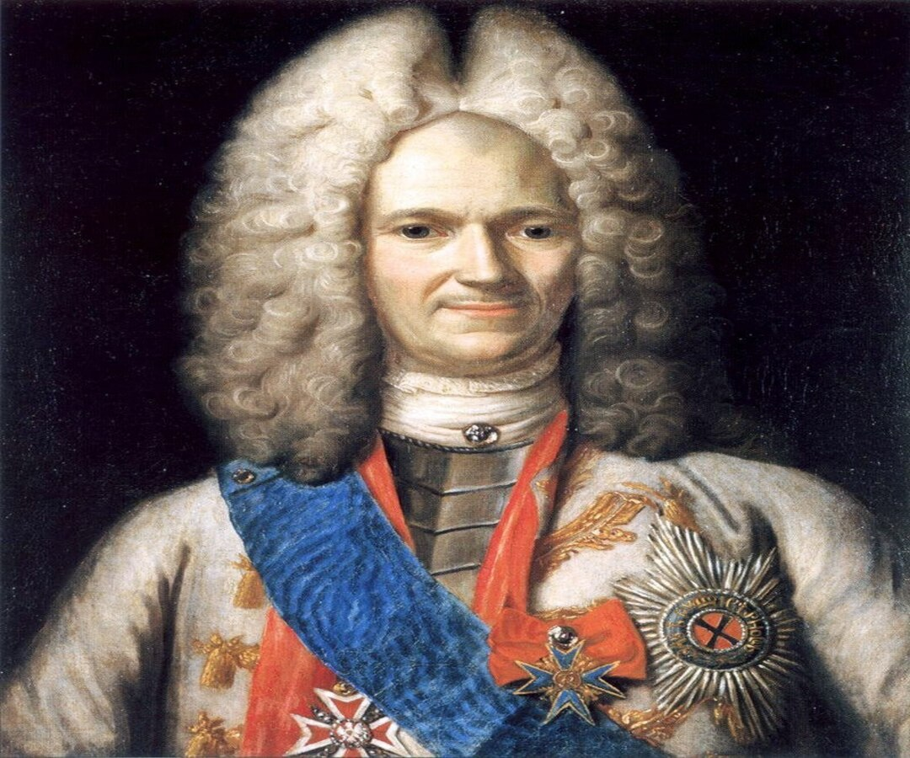
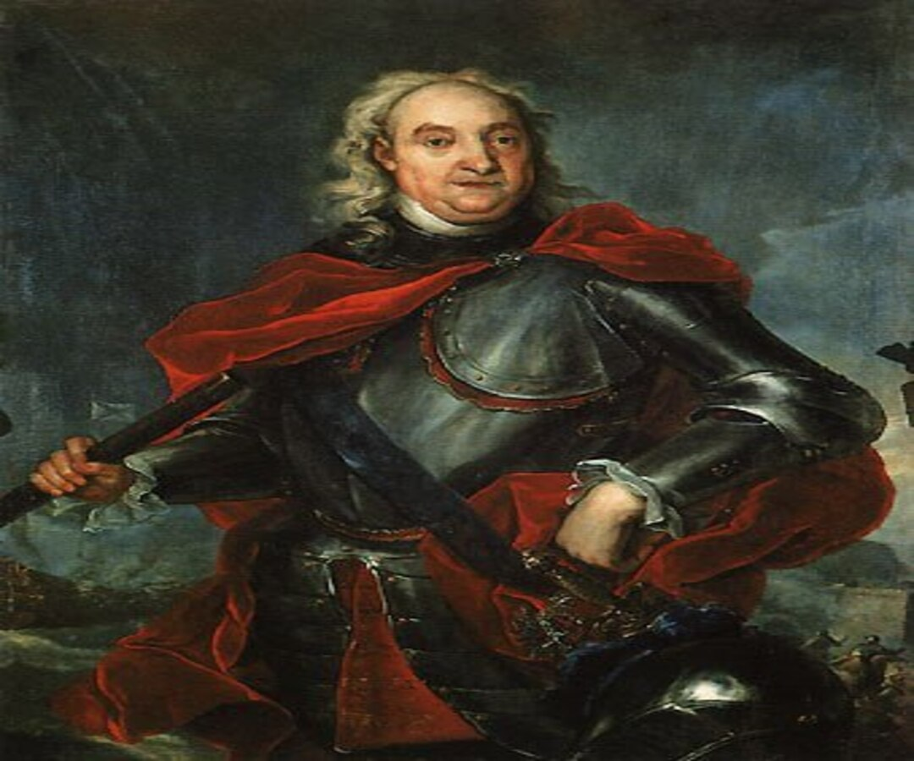
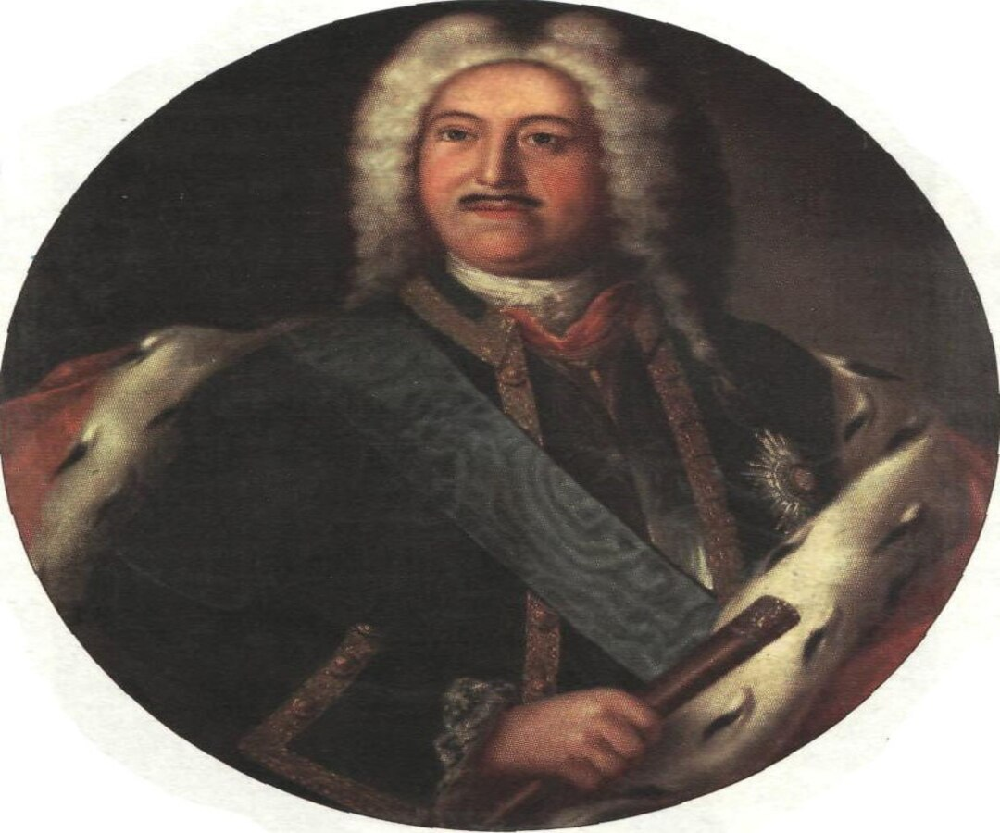
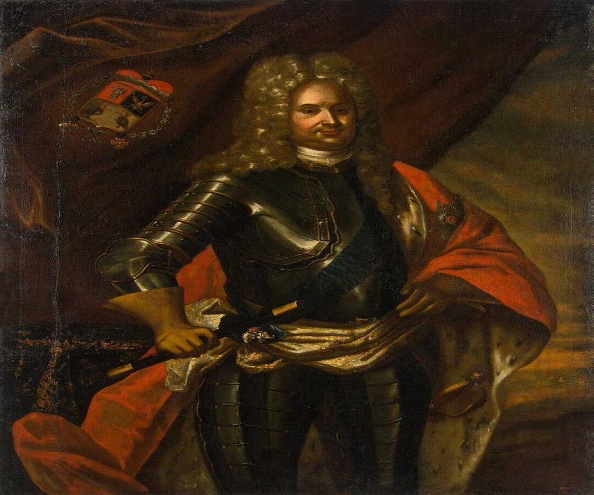
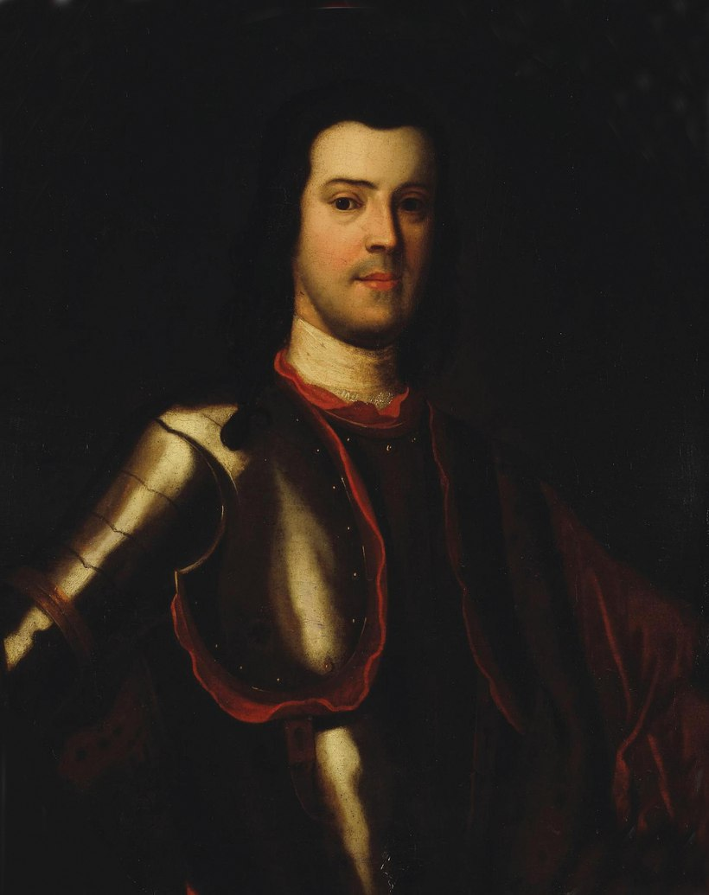
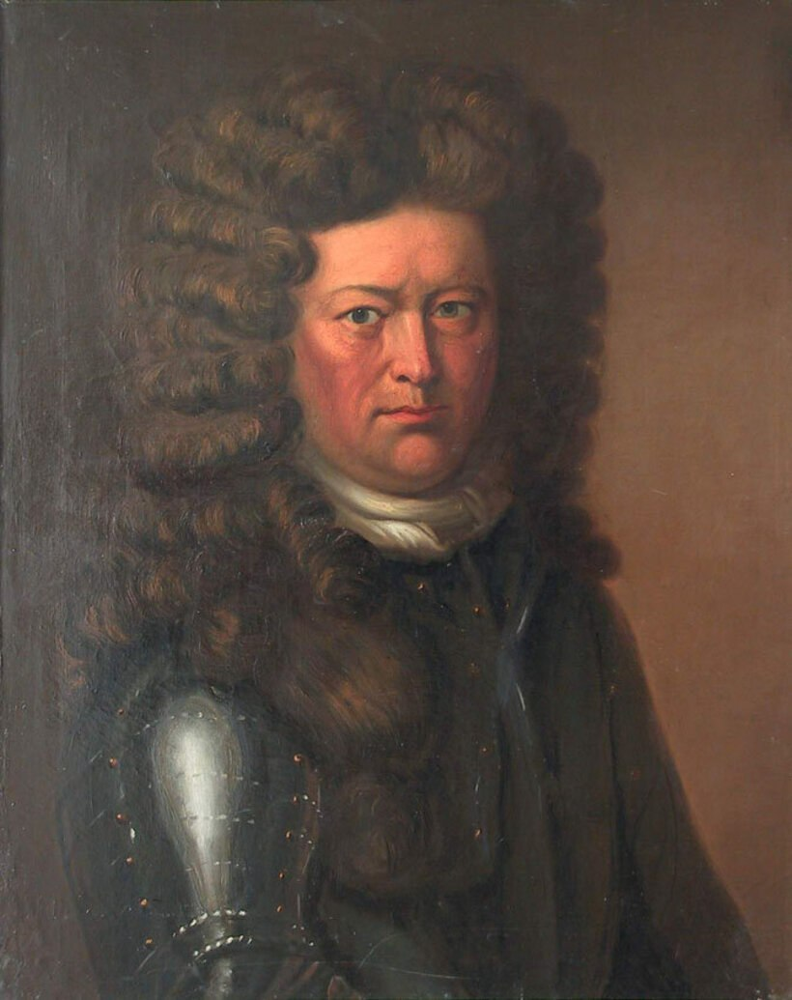

Интерактивная карта


Интересные Личности

Пётр I Алексе́евич — последний царь всея Руси (с 1682 года) и первый Император Всероссийский (с 1721 года). Петра I считают одним из наиболее выдающихся государственных деятелей, определившим направление развития России в XVIII веке

Бори́с Петро́вич Шереме́тев— русский воинский начальник (воевода) времён Северной войны, дипломат, один из первых русских генерал-фельдмаршалов (с 1701 года), граф (с 1706 года).

Александр Данилович Меншиков - родился в г. Москве 6 ноября 1673г., и погиб 12 ноября 1729г, в г. Березово Сибирской губернии. Занимал должность первого генерала-губернатора Санкт-Петербурга с 1703 по 1724 и с 1725 по 1727

Фёдор Матве́евич Апра́ксин— один из создателей Армейского флота и Российского военно-морского флота, сподвижник Петра I, генерал-адмирал, первый президент Адмиралтейств-коллегии

Князь Михаи́л Миха́йлович Голи́цын — русский полководец, генерал-фельдмаршал и президент Военной коллегии , соратник царя Петра I, участник Северной войны 1700—1721 годов

Князь Аники́та Ива́нович Репни́н — русский военачальник и государственный деятель, генерал-фельдмаршал, участник Северной войны. Первый генерал-губернатор Рижской губернии , второй по счёту Президент Военной коллегии

Анто́н Мануи́лович Девие́р — сподвижник Петра I, генерал-адъютант, первый генерал-полицмейстер Санкт-Петербурга, генерал-аншеф.

Крюйс Корнелий (или Корнилий) Иванович; Ставангер — русский адмирал норвежского происхождения, первый командующий Балтийским флотом.
Интересные факты
Нажмите на кнопку